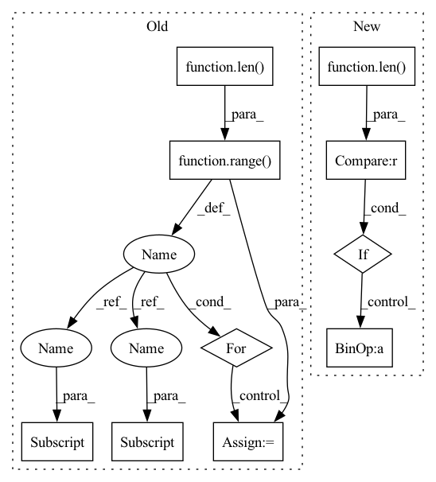

Pattern ID :31967
Before Change
with torch.no_grad():
all_updated = []
for pattern_idx in range(len( pattern_features) ):
// permutation is unique for every pattern hence cannot perform vector operations
// Padding is mixed up in the permutation, no need for additional processing
updated_feature = torch.stack([pattern_features[pattern_idx] [i] for i in permutation[pattern_idx] ])
all_updated.append(updated_feature)
return torch.stack(all_updated).to(pattern_features.device)After Change
with torch.no_grad():
extended_permutation = permutation
// match indexing with feature size
if len(permutation.shape) < len(pattern_features.shape) :
for _ in range(len(pattern_features.shape) - len(permutation.shape)):
extended_permutation = extended_permutation.unsqueeze(-1)
// expand just creates a new view without extra copies
extended_permutation = extended_permutation.expand(pattern_features.shape)In pattern: SUPERPATTERN
Frequency: 3
Non-data size: 10
Instances Fragment ID: 93443667
Project Name: maria-korosteleva/garment-pattern-estimation
Commit Name: 66c717b0d59467277210e38e07f0d574af577038
Time: 2021-06-14
Author: mariako@kaist.ac.kr
File Name: nn/metrics.py
M Class Name: ComposedPatternLoss
N Class Name: ComposedPatternLoss
M Method Name: _feature_permute(2)
N Method Name: _feature_permute(2)
M Parent Class:
N Parent Class:
M File Name: nn/metrics.py
N File Name: nn/metrics.py
M Start Line: 903
M End Line: 910
N Start Line: 903
N End Line: 914
Before Change
def __call__(self, image, target):
if random.random() < self.prob:
image = TF.hflip(image)
for idx in range(len( target) ):
target[idx] ["bbox"][0] = 1.0 - target[idx] ["bbox"][0]
return image, target
After Change
def __call__(self, d):
if random.random() < self.prob:
d["images"] = TF.hflip(d["images"])
if len(d["boxes"]) > 0 :
d["boxes"][..., 0] = 1.0 - d["boxes"][..., 0]
return d
Fragment ID: 93443669
Project Name: krenerd/awesome-modular-pytorch-lightning
Commit Name: 3f592c9713d3bcd143a9a59dde3e93688e31f414
Time: 2022-06-07
Author: 48239275+krenerd@users.noreply.github.com
File Name: data/transforms/vision/detection.py
M Class Name: DetectionHFlip
N Class Name: DetectionHFlip
M Method Name: __call__(2)
N Method Name: __call__(3)
M Parent Class: _BaseTransform
N Parent Class: _BaseTransform
M File Name: data/transforms/vision/detection.py
N File Name: data/transforms/vision/detection.py
M Start Line: 184
M End Line: 189
N Start Line: 251
N End Line: 254
Before Change
def __call__(self, image, target):
if random.random() < self.prob:
image = TF.vflip(image)
for idx in range(len( target) ):
target[idx] ["bbox"][1] = 1.0 - target[idx] ["bbox"][1]
return image, target
After Change
def __call__(self, d):
if random.random() < self.prob:
d["images"] = TF.vflip(d["images"])
if len(d["boxes"]) > 0 :
d["boxes"][..., 1] = 1.0 - d["boxes"][..., 1]
return d
Fragment ID: 93443668
Project Name: krenerd/awesome-modular-pytorch-lightning
Commit Name: 3f592c9713d3bcd143a9a59dde3e93688e31f414
Time: 2022-06-07
Author: 48239275+krenerd@users.noreply.github.com
File Name: data/transforms/vision/detection.py
M Class Name: DetectionVFlip
N Class Name: DetectionVFlip
M Method Name: __call__(2)
N Method Name: __call__(3)
M Parent Class: _BaseTransform
N Parent Class: _BaseTransform
M File Name: data/transforms/vision/detection.py
N File Name: data/transforms/vision/detection.py
M Start Line: 203
M End Line: 208
N Start Line: 264
N End Line: 267
Before Change
with torch.no_grad():
all_updated = []
for pattern_idx in range(len( pattern_features) ):
// permutation is unique for every pattern hence cannot perform vector operations
// Padding is mixed up in the permutation, no need for additional processing
updated_feature = torch.stack([pattern_features[pattern_idx] [i] for i in permutation[pattern_idx] ])
all_updated.append(updated_feature)
return torch.stack(all_updated).to(pattern_features.device)After Change
with torch.no_grad():
extended_permutation = permutation
// match indexing with feature size
if len(permutation.shape) < len(pattern_features.shape) :
for _ in range(len(pattern_features.shape) - len(permutation.shape)):
extended_permutation = extended_permutation.unsqueeze(-1)
// expand just creates a new view without extra copies
extended_permutation = extended_permutation.expand(pattern_features.shape) Fragment ID: 93443671
Project Name: maria-korosteleva/garment-pattern-estimation
Commit Name: 66c717b0d59467277210e38e07f0d574af577038
Time: 2021-06-14
Author: mariako@kaist.ac.kr
File Name: nn/metrics.py
M Class Name: ComposedPatternLoss
N Class Name: ComposedPatternLoss
M Method Name: _feature_permute(2)
N Method Name: _feature_permute(2)
M Parent Class:
N Parent Class:
M File Name: nn/metrics.py
N File Name: nn/metrics.py
M Start Line: 903
M End Line: 910
N Start Line: 903
N End Line: 914